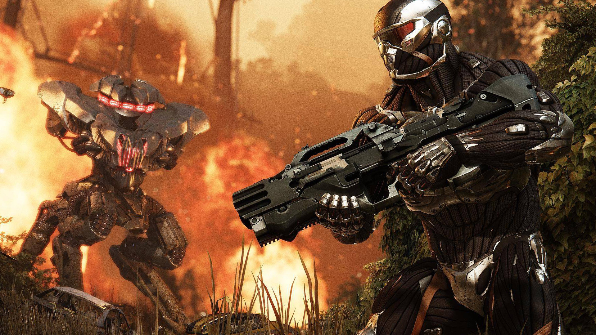
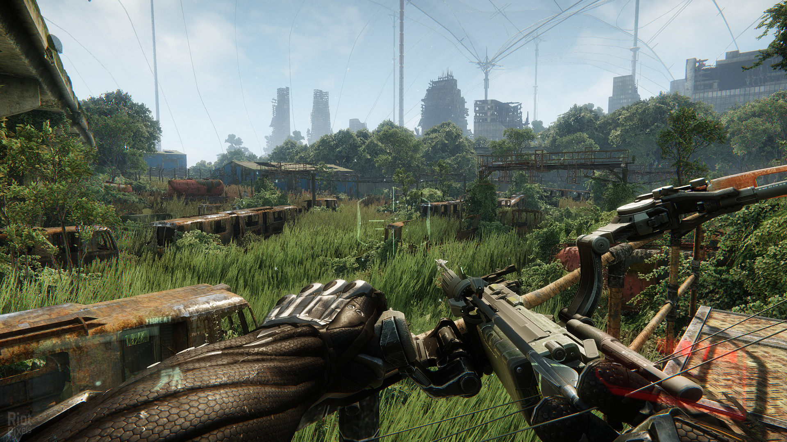
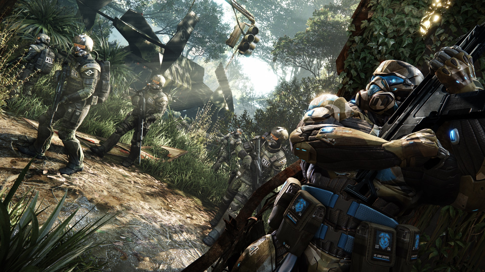
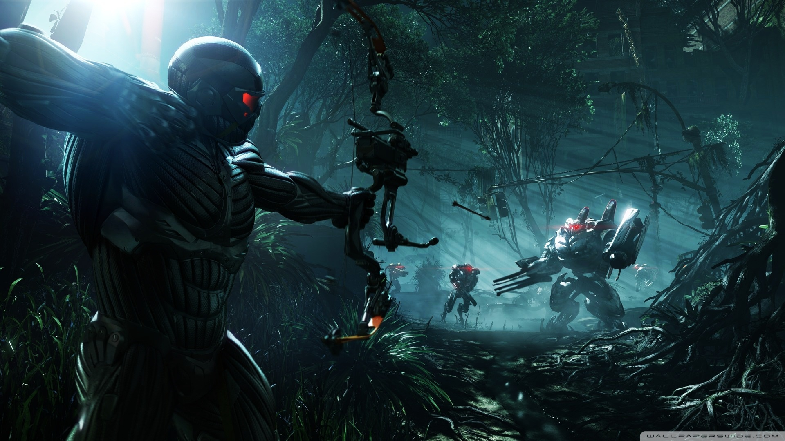

Crysis 3
Crysis 3 is a 2013 first-person shooter video game developed by Crytek and published in 2013 by Electronic Arts. It is the third main game of the Crysis series, a sequel to the 2011 video game Crysis 2. The multiplayer portion of the game was developed by Crytek UK. Crysis 3's story revolves around Prophet, a Nanosuit holder who is on a quest to take revenge on the Alpha Ceph, the leader of the Ceph alien race. The game's story serves as the end of the Crysis trilogy. Gameplay revolves around the use of the Nanosuit, which grants players a variety of abilities such as being invisible. New features introduced in Crysis 3 include a new Nanosuit ability called "Rip & Throw", a compound bow and hacking, which allows players to hack into enemies' equipment, drones, and security defenses.
The game is set in a post-apocalyptic New York City, in an effort to merge the urban landscape of Crysis 2 and the forest setting of the original Crysis. The game introduces the "Seven Wonders", with each wonder having its own unique landscape and tactical layout. Due to complaints about Crysis 2's linearity, the game's levels were opened up so as to grant players more freedom. The development team also put efforts into creating a more emotional story, and the story's protagonist was inspired by the lead character of District 9. The game was developed by a team of 100 people during its 23-month development cycle. Crytek UK developed the game's multiplayer portion.
The game is set in a post-apocalyptic New York City, in an effort to merge the urban landscape of Crysis 2 and the forest setting of the original Crysis. The game introduces the "Seven Wonders", with each wonder having its own unique landscape and tactical layout. Due to complaints about Crysis 2's linearity, the game's levels were opened up so as to grant players more freedom. The development team also put efforts into creating a more emotional story, and the story's protagonist was inspired by the lead character of District 9. The game was developed by a team of 100 people during its 23-month development cycle. Crytek UK developed the game's multiplayer portion.

Gameplay
Battlefield 3 features the combined arms battles across single-player, co-operative and multiplayer modes. It reintroduces several elements absent from the Bad Company games, including fighter jets, the prone position and 64-player battles on PC. To accommodate the lower player count on consoles, the ground area is limited for Xbox 360 and PS3, though fly space remains the same.
The game features maps set in Paris, Tehran (as well as other locations in Iran), Sulaymaniyah in Iraq, New York City, Wake Island, Oman, Kuwait City, and other parts of the Persian Gulf. The maps cover urban streets, metropolitan downtown areas, and open landscapes suited to vehicle combat. Battlefield 3 introduces the "Battlelog"; a free cross-platform social service with built-in text messaging, voice communications, game statistics, and the ability to join games that friends are already playing (though both players need to be on the same platform).
The game features maps set in Paris, Tehran (as well as other locations in Iran), Sulaymaniyah in Iraq, New York City, Wake Island, Oman, Kuwait City, and other parts of the Persian Gulf. The maps cover urban streets, metropolitan downtown areas, and open landscapes suited to vehicle combat. Battlefield 3 introduces the "Battlelog"; a free cross-platform social service with built-in text messaging, voice communications, game statistics, and the ability to join games that friends are already playing (though both players need to be on the same platform).

Multiplayer
Gameplay remains similar when playing the multiplayer mode. Unlike the single-player campaign, when players sprint or boost their armor in the multiplayer modes, it does not use any nanosuit energy. There are 8 different modes, with a total of 12 available maps to play on. They are Team Deathmatch, Deathmatch, Crash Site / Spears, Capture the Relay / Extraction, Hunter, Assault, Cell Vs Rebel, Developers Choice, Maximum Team Deathmatch, and Maximum Deathmatch. Scattered throughout each map are special alien weapons with scarce ammo and can be picked up by players.Players also have a new passive ability called Rip and Throw, in which they interact with environmental objects to create obstacles for hostile players and tactical advantages for themselves.
This ability to interact with the environment was pushed heavily upon the team by their publisher, EA. A refined kill streak system is introduced in Crysis 3, allowing players to gain rewards by killing hostile players simultaneously while collecting their dog tag. This refined kill system involves collecting dog tags that are dropped by enemy players when killed. The perks gained from this vary from map to map. They are Maximum Radar, Swarmer, Gamma Burst, EMP, and Maximum Nanosuit, which reveals enemy players locations on the mini-map.
This ability to interact with the environment was pushed heavily upon the team by their publisher, EA. A refined kill streak system is introduced in Crysis 3, allowing players to gain rewards by killing hostile players simultaneously while collecting their dog tag. This refined kill system involves collecting dog tags that are dropped by enemy players when killed. The perks gained from this vary from map to map. They are Maximum Radar, Swarmer, Gamma Burst, EMP, and Maximum Nanosuit, which reveals enemy players locations on the mini-map.

Synopsis
Players take on the role of Prophet as he returns to New York in 2047, 24 years after the events of Crysis 2. He discovers the city has been encased in a giant Nanodome created by the corrupt CELL corporation. The New York City Liberty Dome is a veritable urban rainforest teeming with overgrown trees, dense swamplands, and raging rivers. Within the Liberty Dome, seven distinct and treacherous environments are known as the Seven Wonders. Prophet is said to be on a "revenge mission" after uncovering the truth behind CELL's motives for building the quarantined Nanodome.
Gameplay Trailer